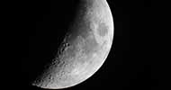
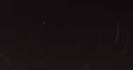
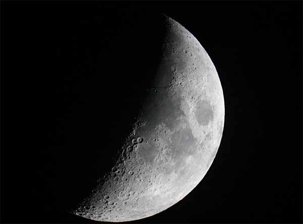
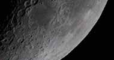

Astronomy is looking up and trying to understand where we fit into our universe
The skies have always fascinated people all across the globe and now there are more ways than ever to get into astronomy at any level

The Moon
The images you can see on this website have all been taken by an amature astonomer with only a few years experience.
The sea of tranquility
Some usefull links:
So take a look around this website and at the links above and get started!